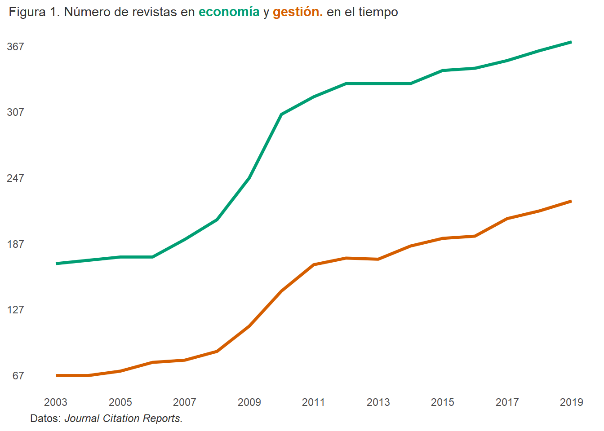
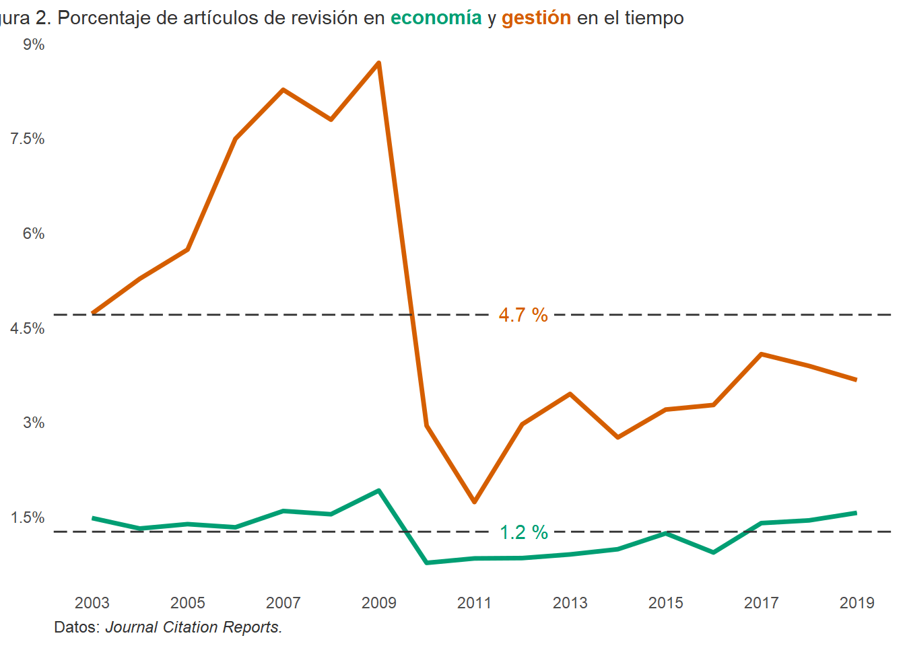

Las revisiones de literatura juegan un papel importante para dar cuenta del panorama actual de un campo de investigación. La revisión de literatura es una forma de resumir, integrar y acumular información de diferentes estudios sobre un tema o pregunta de investigación. Así, el principal insumo de un artículo de revisión son los artículos empíricos. Si se toma en cuenta únicamente el cuánto se produce y no el qué se produce como criterio para analizar la dinámica de publicación de artículos de revisión, se podría esperar que conforme aumenta la publicación artículos empíricos haya más revisiones de literatura del estado de ese conocimiento.
Para confrontar esta afirmación con los datos, hice un ejercicio descriptivo el cual permite conocer la dinámica de la producción científica, específicamente, la de los artículos de revisión en las disciplinas de economía y gestión (management). Para ello me basé en la información del Journal Citation Reports (Clarivate Analytics, 2019). Opté por la base de datos de Web of science (WoS) ya que permite recuperar y analizar información agregada de revistas que pertenezcan a una misma disciplina. Además, se tiene en cuenta únicamente las revistas indexadas en el Social Sciences Citation Index (SSCI). Para este ejercicio es preferible usar WoS, ya que la base de datos Scopus no permite analizar revistas agregadas por disciplinas. En esta base de datos la información bibliométrica se agrupa en cinco áreas de investigación. Dentro del área de ciencias sociales se encuentran diversas disciplinas, entre ellas economías, gestión, negocios y finanzas. Como cada revista se clasifica en al menos una disciplina, opté por analizar las disciplinas de economía y gestión, ya que varias de las revistas clasificadas en estas disciplinas pueden estar incluidas en las áreas de negocios y finanzas, lo que resultaría en un traslape en el análisis.
En primer lugar, la publicación de artículos (de revisión y empíricos) en economía es mayor que en la disciplina de gestión. En economía se publica casi el doble de artículos que en gestión. Por ejemplo, en el 2019 se publicaron 21.589 artículos, comparado con 11.678 en gestión. Así mismo, hay un mayor número de revistas en economía, aunque la diferencia se ha reducido en los últimos 16 años (Figura 1). En el 2003, el panorama era que por cada revista en la disciplina de gestión habían 2.5 revistas de economía, y actualmente la diferencia es de 1.6 a 1. Una de las posibles razones de la reducción de esta diferencia es el mayor ritmo de crecimiento de las revistas de gestión. En el área de gestión se ha cuadruplicado el número de revistas mientras que en economía se ha triplicado. Como se muestra en la Figura 1, al 2019 había 371 revistas en el área de economía y 226 en gestión. Tanto para economía como en gestión se distinguen dos periodos de crecimiento, la tasa de crecimiento de revistas y de artículos fue mayor durante 2003-2011 que durante 2012-2019.
Otra característica asociada al mayor número de publicaciones es la frecuencia de publicación de los artículos. En el 2003, economía se caracterizaba por tener más revistas con frecuencia de publicación trimestral, mientras que en gestión había revistas de publicación principalmente trimestral y bimensual. Gran parte de las revistas que han ido surgiendo tienen una frecuencia de publicación trimestral, la cual es la más común hoy en día. Actualmente, el comportamiento es similar en ambas áreas. Esto es otra posible razón que explique el aumento en el número de artículos publicados.

Teniendo presente que la producción científica se ha incrementado, ahora interesa saber cómo ha sido la dinámica de la publicación de las revisiones de literatura. La Figura 2 muestra el porcentaje de artículos de revisión publicados en las disciplinas de economía y de gestión. Lo primero que se evidencia es que se publican más artículos de revisión en gestión que en economía, y la relación promedio de publicación es de 1.5 a 1. En el área de gestión hay más dinamismo en la publicación de revisiones que en economía. También salta a la vista que hay dos períodos de crecimiento interrumpidos por uno de decrecimiento: 2003-2009 y 2012-2019. Durante el 2003 al 2009 la participación de revisiones de literatura en el total de publicaciones creció por encima del promedio, tanto en economía como en gestión. Si bien durante el período 2012-2019 la tendencia de crecimiento se mantuvo, al menos en el área de gestión no alcanzó el porcentaje de participación promedio del primer periodo.
En particular en economía, las revisiones de literatura representan el 1.2 % del total de artículos publicados, en promedio. Desde el 2010 ha habido una tendencia creciente hacia la publicación de artículos de revisión. En el caso del área de gestión, el promedio de publicación de revisiones de literatura es del 4.7 %. Aunque hay un comportamiento creciente en la publicación de revisiones, ésta ha estado por debajo de la media en los últimos 8 años.
Durante 2010 y 2011 hubo una caída tanto en el número de las publicaciones como en el porcentaje de artículos de revisión. En estos dos años se produjeron 50 % menos revisiones en comparación con años anteriores. Una posible explicación a la caída en la publicación de revisiones de literatura puede estar asociada con el aumento en el número de nuevas revistas científicas (Figura 1) y el aumento con la publicación de artículos empíricos el cual fue el período de mayor crecimiento en los 16 años (20 % aprox.). La creación de revistas científicas tiene diferentes motivos, entre ellos, la necesidad de un espacio divulgativo para nuevos o diferentes temas de investigación, cubrir nuevos nichos de mercado, o apostar por el acceso abierto al conocimiento, entre otros. Las nuevas revistas que surgieron en estos dos años publicaron más investigación de artículos empíricos que de revisión. Luego de acumular durante los años este tipo de investigación, posiblemente abrieron espacio para la publicación de artículos de revisión.

La información del JRC permite conocer las tendencias de la producción científica, y para este caso, de las disciplinas de economía y gestión. Sin embargo, para dar más respuestas de tipo explicativo se requiere de otro tipo de información para cada disciplina. A manera de ejemplo, una pregunta que no puede resolverse con estos datos es ¿por qué se publican más revisiones de literatura en gestión que en economía? Una posible explicación, aunque habría que indagar en los artículos de revisión, es si esto se relaciona con la mayor diversidad de enfoques y teorías en gestión, lo cual puede estar relacionado con la mayor necesidad de artículos de revisión. Otra pregunta que no puede responderse con la información disponible es si, sabiendo que las revisiones de literatura han aumentado, ¿qué tipo de revisiones han tenido más crecimiento, las revisiones sistemáticas o las narrativas?
El número de revistas y artículos científicos se ha incrementado en las disciplinas de economía y gestión.
Hay más publicaciones de artículos empíricos (y revistas) en economía que en gestión, pero se publican más revisiones de literatura en gestión que en economía.
La publicación de artículos de revisión tiene una tendencia creciente desde los últimos 8 años.
Posiblemente, la disminución en la publicación de artículos de revisión durante el 2010 y 2011 esté asociada con el surgimiento de nuevas revistas y la preferencia por artículos empíricos, lo cual desincentivó la publicación de revisiones de literatura en estos años.